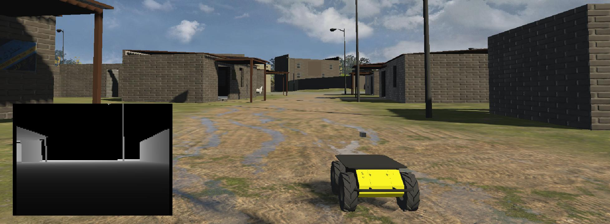
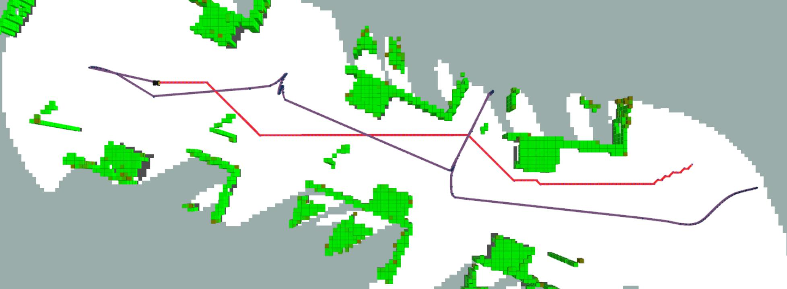
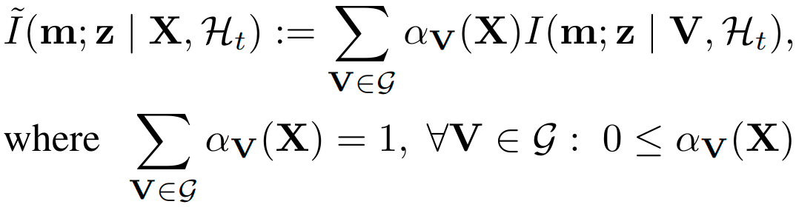
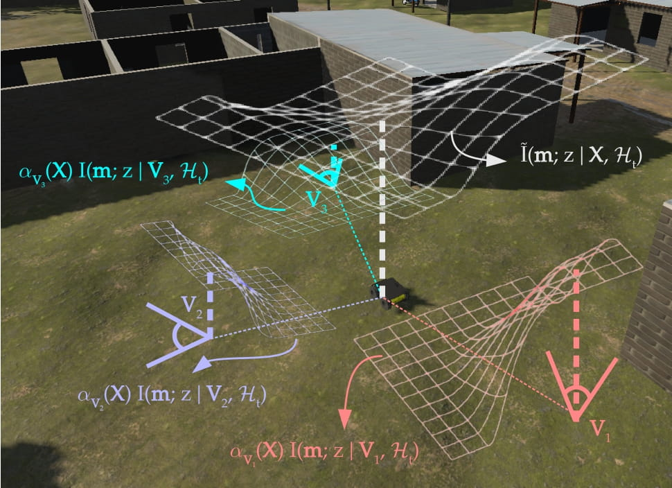
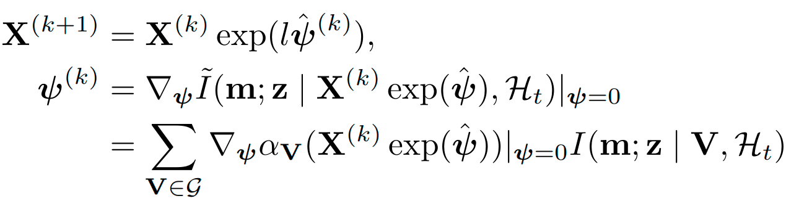
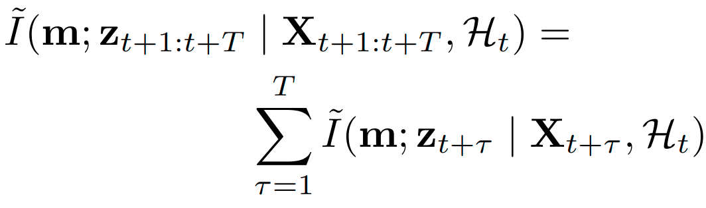
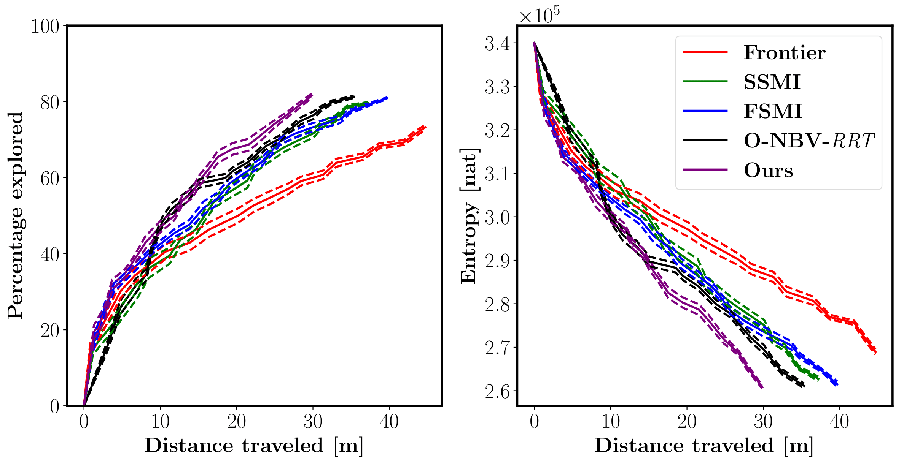
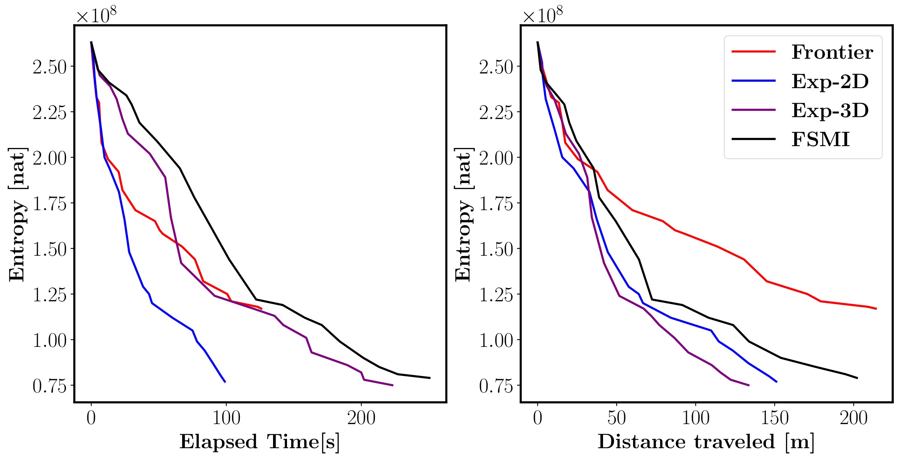
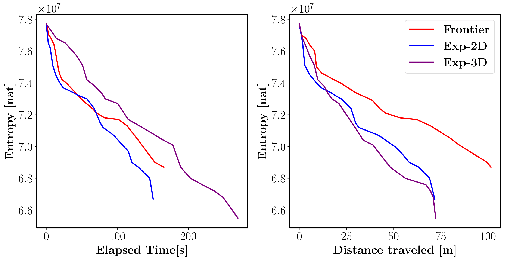
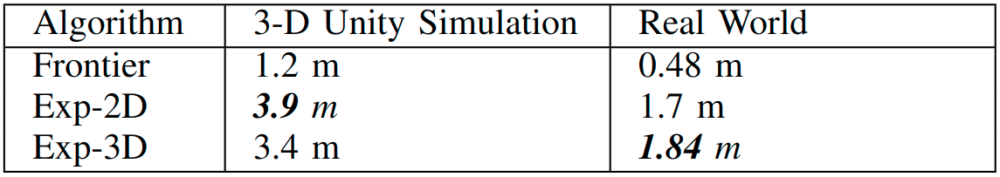

Active Mapping via Gradient Ascent Optimization of
Shannon Mutual Information over Continuous SE(3) Trajectories
The problem of active mapping aims to plan an informative sequence of sensing views given a limited budget such as distance traveled. This paper considers active occupancy grid mapping using a range sensor, such as LiDAR or depth camera. State-of-the-art methods optimize information-theoretic measures relating the occupancy grid probabilities with the range sensor measurements. The non-smooth nature of ray-tracing within a grid representation makes the objective function non-differentiable, forcing existing methods to search over a discrete space of candidate trajectories. This work proposes a differentiable approximation of the Shannon mutual information (SMI) between a grid map and ray-based observations that enables gradient ascent optimization in the continuous space of SE(3) sensor poses. Our gradient-based formulation leads to more informative sensing trajectories, while avoiding occlusions and collisions. The proposed method is demonstrated in simulated and real-world experiments in 2-D and 3-D environments.
Problem
In this work, we want to construct a occupancy map of the environment using range observations by finding the most informative trajectory while avoiding collisions.


Approach
The core idea is to introduce the notion of a viewpoint grid, which is a discrete set of candidate robot poses located at grid map cell centers. Then, the SMI with respect to an arbitrary robot pose is approximated as a convex combination of the SMI with respect to the candidate poses with a differentiable function with respect to an arbitrary robot pose.


The idea of pulling the robot pose X out of the SMI function using a differentiable weighting function makes it possible to obtain non-zero derivatives for the approximate SMI function with respect to the robot pose. The differentiable property of the approximate SMI enables gradient-based optimization of the robot pose in order to generate maximally informative observations. This is done via applying a small perturbation in the robot frame to the pose X along the direction of the gradient:

Furthermore, we show that, for non-overlapping sensor footprints along a robot trajectory, the approximate SMI can be expressed as the sum of individual SMI approximations for each pose in the trajectory:

The differentiability of the approximate SMI enables combining with other differentiable cost terms such as collision penalty; resulting in occlusion and collision-aware gradient-based active mapping.
Experiments

2-D simulated active mapping performance compared among various methods. The results are averaged over 10 randomly generated environments with 3 random starting positions. The dashed lines represent deviation from the mean.

3-D active mapping performance in Unity simulation compared between Frontier, FSMI, and our method for 20 exploration iterations. Exp-2D uses a projected 2-D perception model for planning, while Exp-3D performs ray-tracing directly on the OctoMap.

3-D active mapping performance in real-world experiments compared between Frontier and our method for 20 exploration iterations.

Clearance from obstacles compared between Frontier and our proposed method averaged over 20 exploration iterations.
Video
Acknowledgements
We gratefully acknowledge support from NSF FRR CAREER 2045945, ONR SAI N00014-18-1-2828, and ARL DCIST CRA W911NF-17-2-0181. The Unity simulation used for evaluation is developed by ARL for the DCIST project.
|